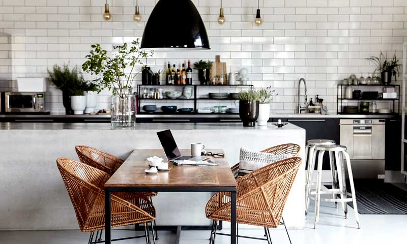
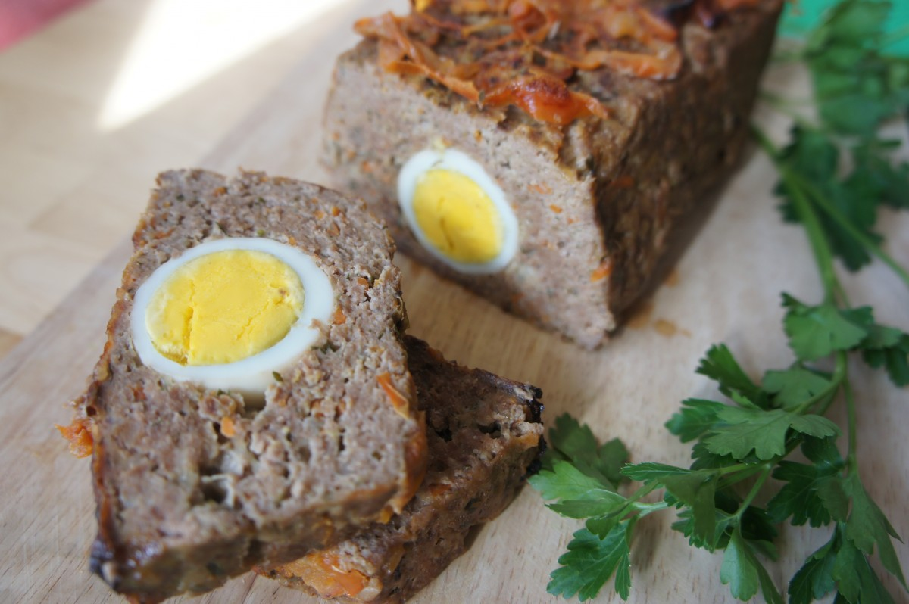

Manjare
Tu blog de recetas
Favoritos:

Historial:
- Comida italiana
- Goulash
- Risotto
- Pescados
La cocina como lugar de encuentro:
Fecha del día: 26/07/2018
Según el estudio Global Kitchen del Instituto Silestone, la cocina se abre al resto de la vivienda, buscando un lugar de encuentro. Será un espacio social, centrado en la salud, cuyo diseño no solo tendrá en cuenta la estética y la funcionalidad sino también el valor emocional, por lo que reforzará su uso como lugar de relajación y bienestar, apunta el estudio de Silestone. Debe crecer en metros cuadrados, pero también en soluciones que permitan y favorezcan las relaciones personales: islas, mesas, encimeras XL que ganan superficie de trabajo, pero también de mesa…
Receta del día: Asado aleman
Fecha del día: 25/07/2018
Pon a cocer los 4 huevos en una olla y cuando estén listos déjalos enfriar antes de pelarlos (así evitas que se rompan). Coloca las rebanadas de pan de molde o el pan batido en un plato hondo grande y agrega la leche tibia para que se remoje con mayor facilidad. Una vez listo, muélelo bien con un tenedor o pásalo por el cedazo. En un bol grande mezcla la carne molida, el pan remojado, la cebolla picada en cubitos finos, la zanahoria rallada, el perejil picado chiquito y el queso parmesano. Agrega los huevos y revuelve bien todo. Finalmente, condimenta con sal, pimienta y aliño completo. Lava, pela el tomate y colócalo al fondo cortados en rebanadas (yo olvidé pelarlo y se ve feo), condimenta con un poco de sal y orégano. Esto es para evitar que se seque mucho por abajo. Continua colocando ⅓ de tu mezcla de carne, agrega los huevos duros en filita (puedes cortarle los extremos para que calcen mejor), cubre los bordes del molde con mas mezcla de carne y finalmente tapa todo muy bien, utilizando el resto de la mezcla. Hornea durante 45 minutos a 1 hora y antes de desmoldar, espera que se enfríe un poco para evitar quemarte.